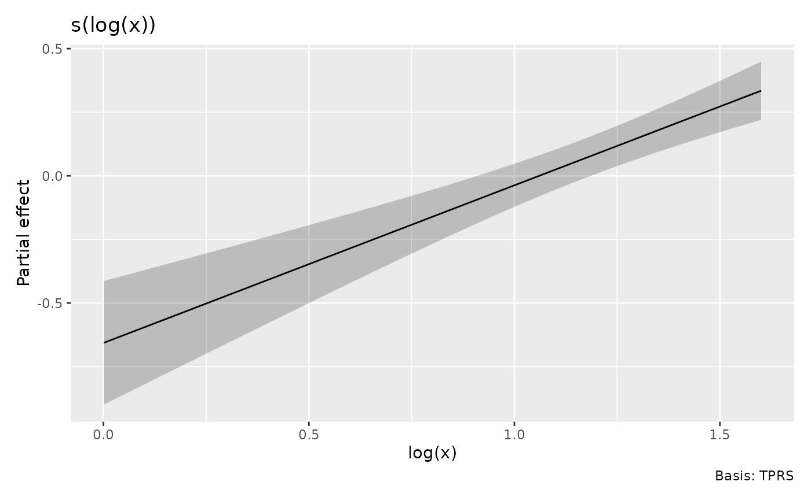

Functions of covariates and evaluation environments
Source:vignettes/transformed-covariates.Rmd
transformed-covariates.RmdA smooth can depend on a function of a covariate rather than on the raw covariate. The same distinction arises with offsets, such as logged effort in a count model.
set.seed(42)
dat <- data.frame(x = runif(150, 1, 5), effort = runif(150, 1, 3))
dat$y <- rpois(nrow(dat), dat$effort * exp(sin(log(dat$x))))
m <- gam(y ~ s(log(x), k = 6) + offset(log(effort)),
family = poisson(), data = dat, method = "REML")Raw data and smooth coordinates
Supply raw covariates to evaluate the model at new observations.
Gratia computes log(x) and, for full predictions,
offset(log(effort)). An isolated smooth does not require
unrelated predictors or the model offset.
nd <- data.frame(x = seq(1.2, 4.8, length.out = 8), effort = 2)
smooth_estimates(m, data = nd["x"])
#> # A tibble: 8 × 6
#> .smooth .type .by .estimate .se `log(x)`
#> <chr> <chr> <chr> <dbl> <dbl> <dbl>
#> 1 s(log(x)) TPRS NA -0.544 0.107 0.182
#> 2 s(log(x)) TPRS NA -0.323 0.0748 0.539
#> 3 s(log(x)) TPRS NA -0.160 0.0543 0.801
#> 4 s(log(x)) TPRS NA -0.0318 0.0428 1.01
#> 5 s(log(x)) TPRS NA 0.0747 0.0396 1.18
#> 6 s(log(x)) TPRS NA 0.166 0.0425 1.33
#> 7 s(log(x)) TPRS NA 0.245 0.0487 1.46
#> 8 s(log(x)) TPRS NA 0.315 0.0561 1.57
fitted_values(m, data = nd)
#> # A tibble: 8 × 7
#> .row x effort .fitted .se .lower_ci .upper_ci
#> <int> <dbl> <dbl> <dbl> <dbl> <dbl> <dbl>
#> 1 1 1.2 2 2.51 0.107 2.03 3.09
#> 2 2 1.71 2 3.13 0.0748 2.70 3.62
#> 3 3 2.23 2 3.68 0.0543 3.31 4.09
#> 4 4 2.74 2 4.18 0.0428 3.85 4.55
#> 5 5 3.26 2 4.65 0.0396 4.31 5.03
#> 6 6 3.77 2 5.10 0.0425 4.69 5.54
#> 7 7 4.29 2 5.52 0.0487 5.01 6.07
#> 8 8 4.8 2 5.92 0.0561 5.30 6.61Automatic smooth grids are evenly spaced in the smooth
coordinate, here log(x), and the output and plot
axes use that name. They use stored evaluated covariates, so they do not
need to reconstruct an inverse transformation.
sm <- smooth_estimates(m, n = 30)
draw(sm)
An explicitly evaluated column is also accepted:
evaluated <- data.frame(`log(x)` = log(nd$x), check.names = FALSE)
smooth_estimates(m, data = evaluated)
#> # A tibble: 8 × 6
#> .smooth .type .by .estimate .se `log(x)`
#> <chr> <chr> <chr> <dbl> <dbl> <dbl>
#> 1 s(log(x)) TPRS NA -0.544 0.107 0.182
#> 2 s(log(x)) TPRS NA -0.323 0.0748 0.539
#> 3 s(log(x)) TPRS NA -0.160 0.0543 0.801
#> 4 s(log(x)) TPRS NA -0.0318 0.0428 1.01
#> 5 s(log(x)) TPRS NA 0.0747 0.0396 1.18
#> 6 s(log(x)) TPRS NA 0.166 0.0425 1.33
#> 7 s(log(x)) TPRS NA 0.245 0.0487 1.46
#> 8 s(log(x)) TPRS NA 0.315 0.0561 1.57If raw inputs and evaluated columns are both supplied, expressions are recomputed from the raw inputs. Stored model frames and automatically prepared grids retain their evaluated coordinates.
data_slice() works with raw variables. Supply reference
data if the original raw covariates cannot be recovered;
transformed values are not renamed as raw variables or automatically
inverted.
data_slice(m, x = evenly(x, n = 8), effort = 2, data = dat)
#> # A tibble: 8 × 2
#> x effort
#> <dbl> <dbl>
#> 1 1.00 2
#> 2 1.57 2
#> 3 2.13 2
#> 4 2.70 2
#> 5 3.26 2
#> 6 3.83 2
#> 7 4.39 2
#> 8 4.96 2Local functions
A fitted model may retain the formula expression without retaining the local environment in which it was evaluated. Preserve that environment when fitting if you will need a local function at new observations.
fit_local <- function(dat) {
shift <- 0.5
transform_x <- function(x) log(x + shift)
f <- y ~ s(transform_x(x), k = 6) + offset(log(effort))
list(model = gam(f, family = poisson(), data = dat, method = "REML"),
envir = environment(f))
}
bundle <- fit_local(dat)
smooth_estimates(bundle$model, data = nd, envir = bundle$envir)
#> # A tibble: 8 × 6
#> .smooth .type .by .estimate .se `transform_x(x)`
#> <chr> <chr> <chr> <dbl> <dbl> <dbl>
#> 1 s(transform_x(x)) TPRS NA -0.543 0.113 0.531
#> 2 s(transform_x(x)) TPRS NA -0.329 0.0772 0.795
#> 3 s(transform_x(x)) TPRS NA -0.164 0.0607 1.00
#> 4 s(transform_x(x)) TPRS NA -0.0295 0.0511 1.18
#> 5 s(transform_x(x)) TPRS NA 0.0802 0.0451 1.32
#> 6 s(transform_x(x)) TPRS NA 0.170 0.0440 1.45
#> 7 s(transform_x(x)) TPRS NA 0.244 0.0497 1.57
#> 8 s(transform_x(x)) TPRS NA 0.308 0.0619 1.67
fitted_values(bundle$model, data = nd, envir = bundle$envir)
#> # A tibble: 8 × 7
#> .row x effort .fitted .se .lower_ci .upper_ci
#> <int> <dbl> <dbl> <dbl> <dbl> <dbl> <dbl>
#> 1 1 1.2 2 2.51 0.113 2.01 3.13
#> 2 2 1.71 2 3.11 0.0772 2.67 3.62
#> 3 3 2.23 2 3.67 0.0607 3.26 4.13
#> 4 4 2.74 2 4.19 0.0511 3.79 4.64
#> 5 5 3.26 2 4.68 0.0451 4.28 5.11
#> 6 6 3.77 2 5.12 0.0440 4.70 5.58
#> 7 7 4.29 2 5.51 0.0497 5.00 6.08
#> 8 8 4.8 2 5.88 0.0619 5.21 6.64Automatic smooth plots can still use stored
transform_x(x) values without this environment. New raw
observations require the function. Evaluation errors identify the
expression and explain how to supply the missing context; stored
training values are never substituted for arbitrary new
observations.
Which derivative?
For a contribution
,
the default derivative is with respect to
.
Set wrt = "covariate" to differentiate with respect to
instead. The latter includes the chain-rule factor
because the transformation is reevaluated after each perturbation of
.
derivatives(m, data = nd, type = "central")
#> # A tibble: 8 × 9
#> .smooth .by .fs .derivative .se .crit .lower_ci .upper_ci `log(x)`
#> <chr> <chr> <chr> <dbl> <dbl> <dbl> <dbl> <dbl> <dbl>
#> 1 s(log(x)) NA NA 0.620 0.101 1.96 0.422 0.817 0.182
#> 2 s(log(x)) NA NA 0.620 0.100 1.96 0.423 0.817 0.539
#> 3 s(log(x)) NA NA 0.620 0.100 1.96 0.423 0.816 0.801
#> 4 s(log(x)) NA NA 0.620 0.100 1.96 0.423 0.816 1.01
#> 5 s(log(x)) NA NA 0.620 0.100 1.96 0.423 0.816 1.18
#> 6 s(log(x)) NA NA 0.620 0.100 1.96 0.423 0.816 1.33
#> 7 s(log(x)) NA NA 0.619 0.101 1.96 0.422 0.816 1.46
#> 8 s(log(x)) NA NA 0.619 0.101 1.96 0.422 0.817 1.57
derivatives(m, data = nd, type = "central", wrt = "covariate")
#> # A tibble: 8 × 9
#> .smooth .by .fs .derivative .se .crit .lower_ci .upper_ci x
#> <chr> <chr> <chr> <dbl> <dbl> <dbl> <dbl> <dbl> <dbl>
#> 1 s(log(x)) NA NA 0.516 0.0839 1.96 0.352 0.681 1.2
#> 2 s(log(x)) NA NA 0.361 0.0586 1.96 0.247 0.476 1.71
#> 3 s(log(x)) NA NA 0.278 0.0450 1.96 0.190 0.366 2.23
#> 4 s(log(x)) NA NA 0.226 0.0366 1.96 0.154 0.298 2.74
#> 5 s(log(x)) NA NA 0.190 0.0308 1.96 0.130 0.251 3.26
#> 6 s(log(x)) NA NA 0.164 0.0266 1.96 0.112 0.216 3.77
#> 7 s(log(x)) NA NA 0.145 0.0235 1.96 0.0986 0.191 4.29
#> 8 s(log(x)) NA NA 0.129 0.0209 1.96 0.0880 0.170 4.8For a smooth of several raw inputs, such as s(I(x / z)),
name the raw focal variable explicitly. Other inputs are
held at the supplied values, or at typical values when generating a
slice. Use I() for arithmetic that R would otherwise
interpret as formula syntax. For tensor smooths, use
partial_derivatives() and specify the smooth or raw focal
coordinate consistently with wrt: wrt
chooses the differentiation scale, and focal names the
coordinate to differentiate along on that scale.
For example, te(log(x), sqrt(z)) represents a
contribution
.
The two choices have the following meanings:
| Arguments | Derivative |
|---|---|
wrt = "smooth", focal = "log(x)" |
With respect to , holding fixed |
wrt = "covariate", focal = "x" |
With respect to , holding fixed |
set.seed(43)
tensor_dat <- data.frame(x = runif(150, 1, 5), z = runif(150, 1, 3))
tensor_dat$y <- sin(log(tensor_dat$x)) * sqrt(tensor_dat$z) +
rnorm(nrow(tensor_dat), sd = 0.1)
tensor_model <- gam(y ~ te(log(x), sqrt(z), k = c(4, 4)),
data = tensor_dat, method = "REML")
# Vary x along a slice with z held fixed.
tensor_nd <- data.frame(x = seq(1.2, 4.8, length.out = 8), z = 2)
pd_smooth <- partial_derivatives(tensor_model, data = tensor_nd,
wrt = "smooth", focal = "log(x)", type = "central")
pd_covariate <- partial_derivatives(tensor_model, data = tensor_nd,
wrt = "covariate", focal = "x", type = "central")
# Compare the raw-covariate derivative with the chain-rule calculation.
data.frame(x = tensor_nd$x,
covariate_derivative = pd_covariate$.partial_deriv,
smooth_derivative_over_x = pd_smooth$.partial_deriv / tensor_nd$x)
#> x covariate_derivative smooth_derivative_over_x
#> 1 1.200000 1.10743950 1.10743950
#> 2 1.714286 0.70406919 0.70406919
#> 3 2.228571 0.46255744 0.46255744
#> 4 2.742857 0.30372264 0.30372264
#> 5 3.257143 0.19160164 0.19160164
#> 6 3.771429 0.11442885 0.11442885
#> 7 4.285714 0.07550389 0.07550389
#> 8 4.800000 0.05874753 0.05874753The first call perturbs log(x) directly. The second
perturbs x and recomputes the smooth expressions,
incorporating the chain rule numerically. Thus, for these first
derivatives,
,
up to finite-difference approximation error.
In partial_derivatives(), wrt = "smooth" is
the default, and omitting focal selects the first
non-factor smooth coordinate. With wrt = "covariate",
supply focal whenever several raw covariates are eligible;
for this tensor smooth, choose "x" or "z". If
selecting several smooths, supply one focal per smooth in
their selected order; the same wrt applies to all of
them.
Supplied data should describe a slice with the other
independent numeric inputs held fixed, as z is above.
Raw-scale differentiation requires the raw focal column: stored
transformed values alone are insufficient. For an untransformed
coordinate such as x in te(x, z), both choices
of wrt give the same interpretation.
Choosing a finite-difference step
The derivative functions use eps = NULL by default to
choose a step from the fitted range of the differentiation coordinate.
This is the range of log(x) when differentiating on that
smooth coordinate, or of x when using
wrt = "covariate". The step therefore follows changes in
the covariate’s units and normally stays the same when prediction data
are split into batches.
For derivative order , the range is multiplied by , where for central differences and for forward or backward differences. This balances the orders of rounding and approximation error; for example, second central differences use the fourth root of machine precision. Constant coordinates use their magnitude instead of their range, with a fallback of one at zero. A lower bound and rounding of the step ensure representable perturbations at large coordinates.
This rule does not estimate a universally optimal step: that would
also need information about higher derivatives of the fitted function.
Very small steps can amplify rounding errors, particularly for second
derivatives, while large steps increase approximation error. For unusual
function scales or domain boundaries, supply a positive absolute
eps and check stability at nearby step sizes. See the FiniteDiff
step-size discussion for the error-balance principle.